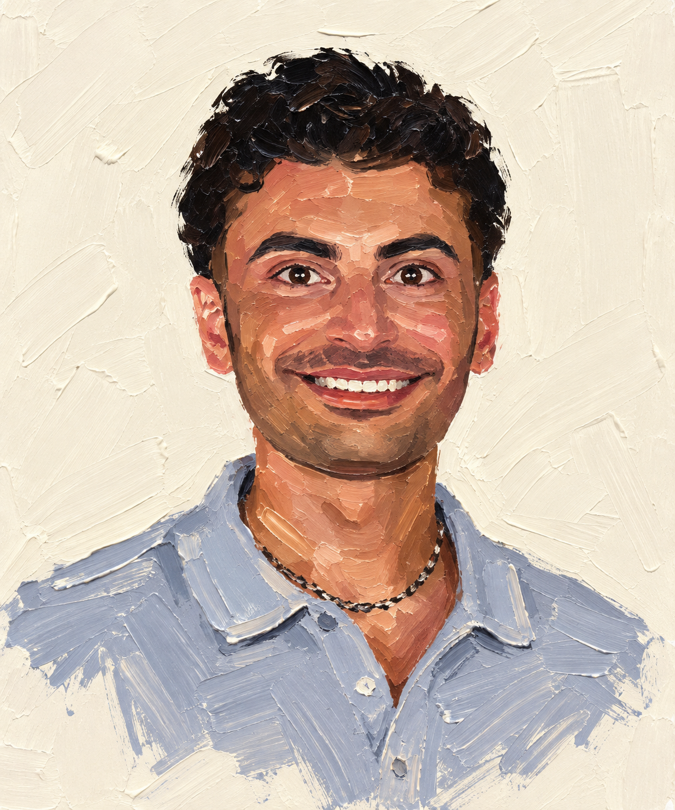

Python, SQL, and data visualization — with an eye for the story in the numbers.
I'm a recent Computer Science graduate from San Diego State University with a passion for uncovering stories hidden in data.
I earned my B.S. in Computer Science, Magna Cum Laude (3.75 GPA), in May 2026, and I'm now pursuing my M.S. in Big Data Analytics at SDSU. I work in Python for data manipulation, SQL for database querying, and Tableau for visualization — my approach is methodical, and I believe the best insights come from asking the right questions and letting the data tell its story.
Growing up in San Diego, I've been shaped by this city's diversity and its unique challenges in healthcare access. My work at an independent pharmacy showed me how data-driven solutions can improve people's lives — identifying cost-saving opportunities in prescription patterns, streamlining processes that directly impact patient care. That experience is what pulled me toward data in the first place: seeing how the right numbers, presented the right way, change what people decide to do next.
Analysis of Medicare Part D prescriber data revealing billions in potential savings through increased generic adoption. Combined pharmacy experience with data science to identify actionable cost opportunities.
See the projectBuilt and tuned Random Forest and XGBoost classifiers on 130,000 airline passenger records, achieving 96% accuracy predicting satisfaction with an automated PDF reporting pipeline for stakeholders.
See the projectTackled a 384:1 class imbalance in credit card fraud data, improving fraud detection recall from 76% to 95% by applying SMOTE to a Random Forest classifier without sacrificing precision.
See the projectCurrently pursuing my M.S. in Big Data Analytics at SDSU, deepening my expertise in advanced analytics, machine learning, and data engineering.
Looking for a full-time data analyst role where I can turn messy data into decisions people actually act on.
Always adding to my toolkit — new visualization platforms, cloud-based analytics, whatever gets me to better answers faster.
Download my full resume to see my complete work history, technical skills, and academic achievements.
Mollison Pharmacy
Process 300–400 prescriptions daily using DigitalRX system. Submit and track prior authorization requests, coordinating with physicians on insurance rejections.
Cal-Med Transportation
Coordinated 50+ daily transportation trips across 7 drivers. Maintained Excel-based tracking system for patient information and scheduling.